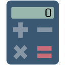

For schools and organizations: an administrator can turn features of the Chrome extension off for everyone they manage, for a class during a test for example. A feature turned off leaves the calculator at once, its option is locked with "Turned off by your administrator", and students cannot turn it back on.
The searchable formulas of geometry, physics, money and more, and the constants of math and science.
formulas
Units of length, area, volume, mass, temperature, speed and more.
converter
The graph of functions, equations and points, with its own window.
graph
The roots of equations, integrals, slopes and sums, and probability.
solve
The count, sum, mean, standard deviation, median and more of a list of numbers.
statistics
Matrices, complex numbers, bases and bits, prime factors and rounding.
numbers
The calculator in a window of its own.
Turns off the calculator on every page too, which opens this window.
detachedMode

The calculator button on the side of every page.
pageButton
In admin.google.com, go to Devices › Chrome › Apps & extensions › Users & browsers.
Pick their organizational unit on the left.
If it is not listed yet: the yellow +, then Add from Chrome Web Store, and search for Scientific Calculator by Raad Altaie.
Click the extension, paste into Policy for extensions on the right, set each feature to false to turn it off or true to leave it on, as the formulas here, and Save.
{
"formulas": { "Value": true },
"converter": { "Value": false },
"graph": { "Value": false },
"solve": { "Value": false },
"statistics": { "Value": false },
"numbers": { "Value": false },
"detachedMode": { "Value": false },
"pageButton": { "Value": false }
}
The browsers take it within minutes, or at once after a restart. To turn a feature on again, set it to true or take its line out.
Open chrome://policy, click Reload policies, and find the extension's settings
under its name. Its options page shows each feature turned off as locked.
DWORD values, 0 for off, under
HKEY_LOCAL_MACHINE\Software\Policies\Google\Chrome\3rdparty\extensions\fnplhdldnhaodknidfddmkfdhlhjihpd\policy
A configuration profile for the domain com.google.Chrome.extensions.fnplhdldnhaodknidfddmkfdhlhjihpd, with a
boolean for each setting.
The same settings in a JSON policy file in /etc/opt/chrome/policies/managed/, under
3rdparty › extensions › fnplhdldnhaodknidfddmkfdhlhjihpd.
fnplhdldnhaodknidfddmkfdhlhjihpd is the extension's ID, the 32 letters at the end of its address in the Chrome Web Store.
© raad.dev all rights reserved.